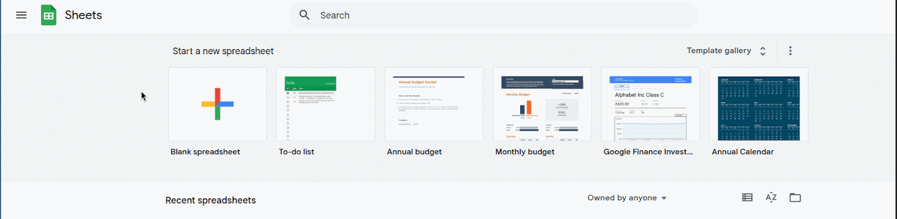
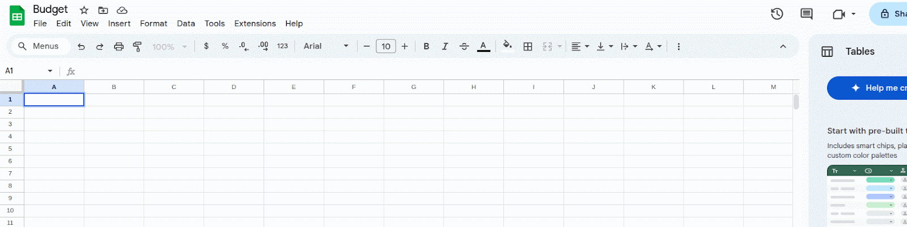
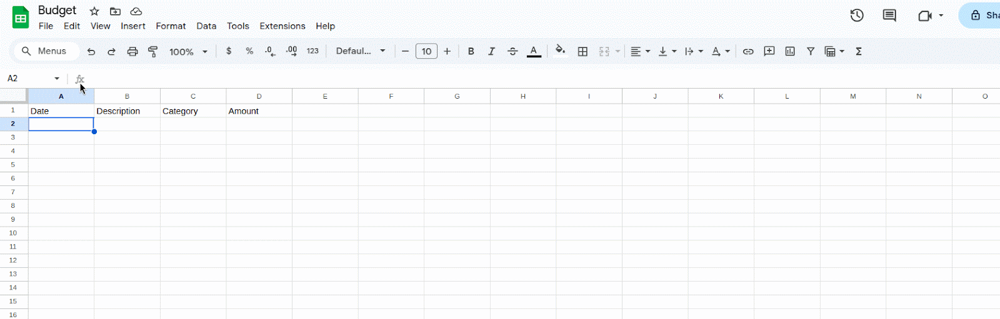
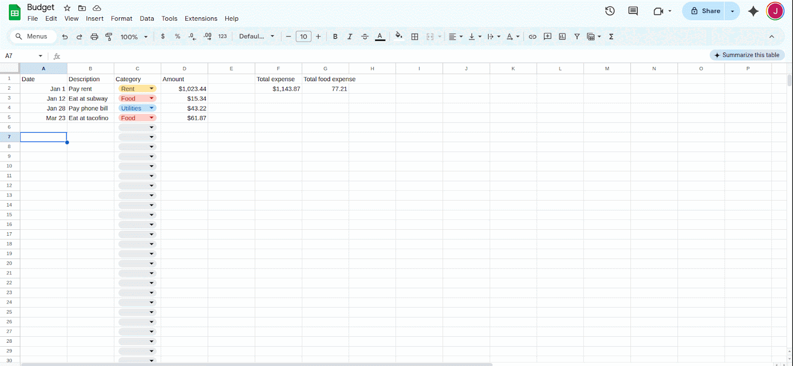
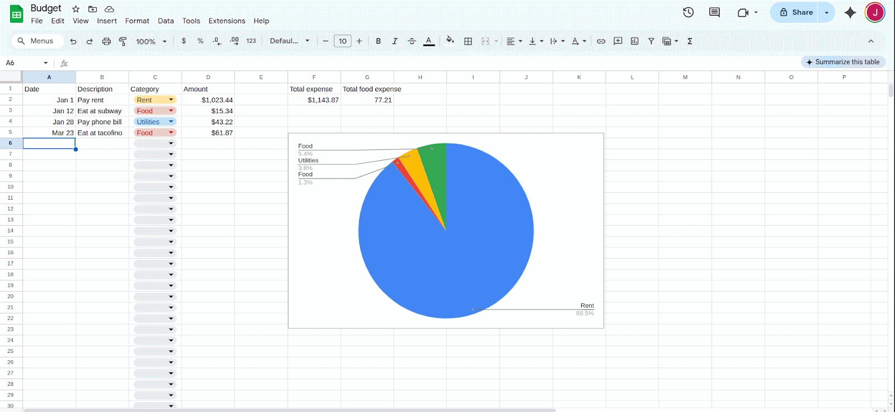

Task 1: Build a Personal Budget Tracker with Automatic Totals
This task walks you through building a personal budget tracker using Google Sheets. By the end of this task, you'll have a working sheet that records your expenses, categorizes them, calculates totals, and shows a pie chart of where your money goes.
1 – Create a new Google Sheet
Open Google Sheets and create a new blank spreadsheet. Give it a meaningful title like My Budget Tracker.

2 – Set up your columns
In Row 1, enter the following headers:
These will be the core of your budget log.

3 – Format the "Amount" column as currency
Select the "Amount" column (column D), then go to Format > Number > Currency to ensure all amounts display as dollars.

4 – Add a dropdown list for your "Category" column
Use data validation to keep categories consistent. First select column C. Then go to Data > Data validation. Finally, choose List of items and enter something like:
Done.
Tip
You can add or edit these categories later, but be consistent with spelling to avoid filtering issues.

5 – Add a total sum
Below the "Amount" column, enter:
This will add up all your recorded expenses.
6 – Add a total for a specific category (such as "Food")
In an empty cell, use:
This will total only the amounts labeled "Food".Warning
Category names in the formula must exactly match what's in your dropdown list.

7 – Insert a pie chart
Go to Insert > Chart, then in the Chart editor on the right hand side, choose C2:C as the label and D2:D as the data range.

8 – Lock the header row
Go to View > Freeze > 1 row.
This keeps your headers visible as you scroll.

What you’ve built
You now have a working personal budget tracker which
- is easy to fill out and update
- sums your expenses
- contains a pie chart for visualizing sources of expense
This tracker can be expanded later with things like monthly filters, savings goals, or automatic formatting.
Tip
Want to reuse this sheet? Make a copy and clear out the rows — the formulas and dropdowns will still work.